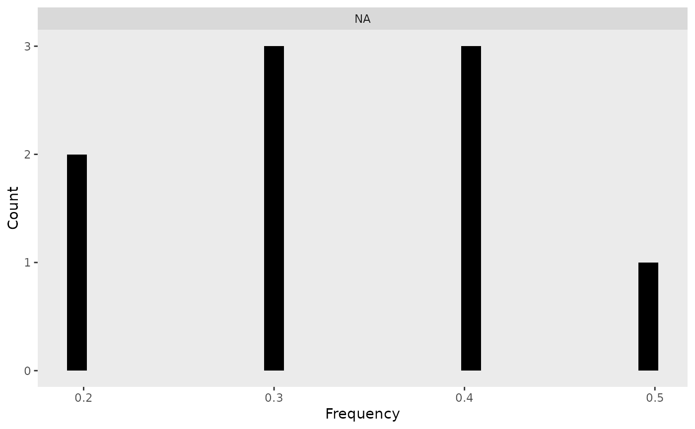

The function creates a histogram of genotype frequencies for each genotype category
(e.g., "0", "1", "2") based on a frequency data frame. The function also
returns the processed long-format data as an attribute. It will not work if your data
is in A, H, B format. Use formater to change to dosage before using frequency_plot.
Value
A ggplot2 histogram visualizing the distribution of genotype frequencies.
The processed long-format data is attached as an attribute (attr(output, "data")).
Details
Converts the input data frame to long format using
pivot_longer().Ensures correct ordering of genotype categories.
Generates a faceted histogram where each panel represents a genotype category.
Stores both the generated plot and the processed data but returns only the plot by default.
Examples
# Example frequency data frame
freq_data <- data.frame(
`0` = c(0.2, 0.3, 0.4),
`1` = c(0.5, 0.4, 0.4),
`2` = c(0.3, 0.3, 0.2),
row.names = c("Marker1", "Marker2", "Marker3")
)
# Generate the frequency histogram
p <- frequency_plot(freq_data)
print(p) # Display the plot
#> `stat_bin()` using `bins = 30`. Pick better value with `binwidth`.

# Access the processed long-format data
attr(p, "data")
#> # A tibble: 9 × 3
#> Marker Dosage Frequency
#> <chr> <fct> <dbl>
#> 1 Marker1 NA 0.2
#> 2 Marker1 NA 0.5
#> 3 Marker1 NA 0.3
#> 4 Marker2 NA 0.3
#> 5 Marker2 NA 0.4
#> 6 Marker2 NA 0.3
#> 7 Marker3 NA 0.4
#> 8 Marker3 NA 0.4
#> 9 Marker3 NA 0.2